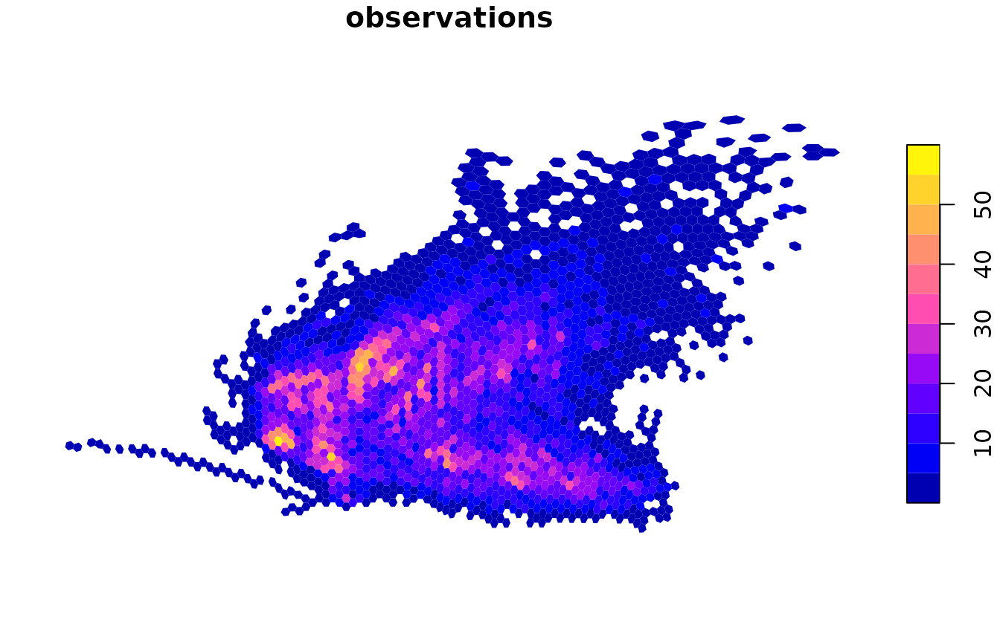
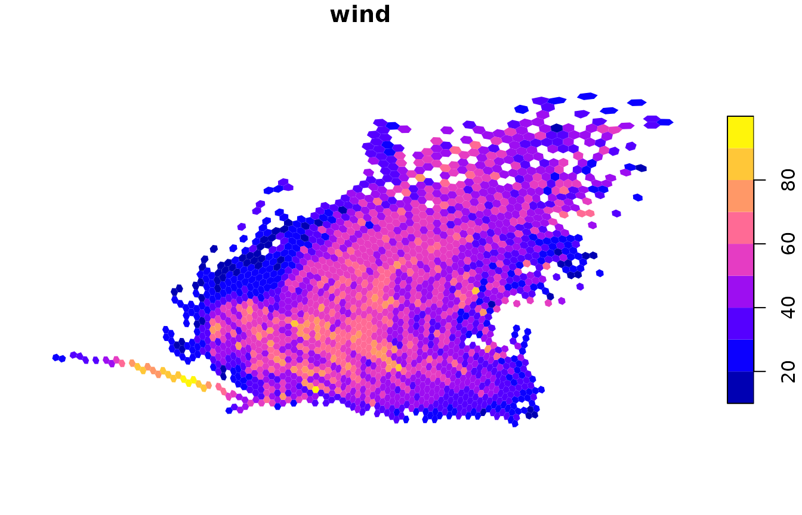
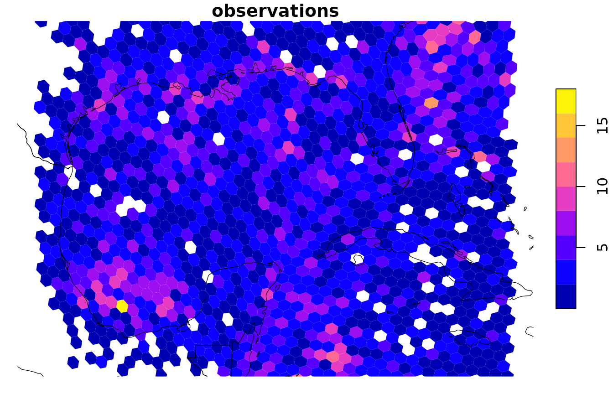
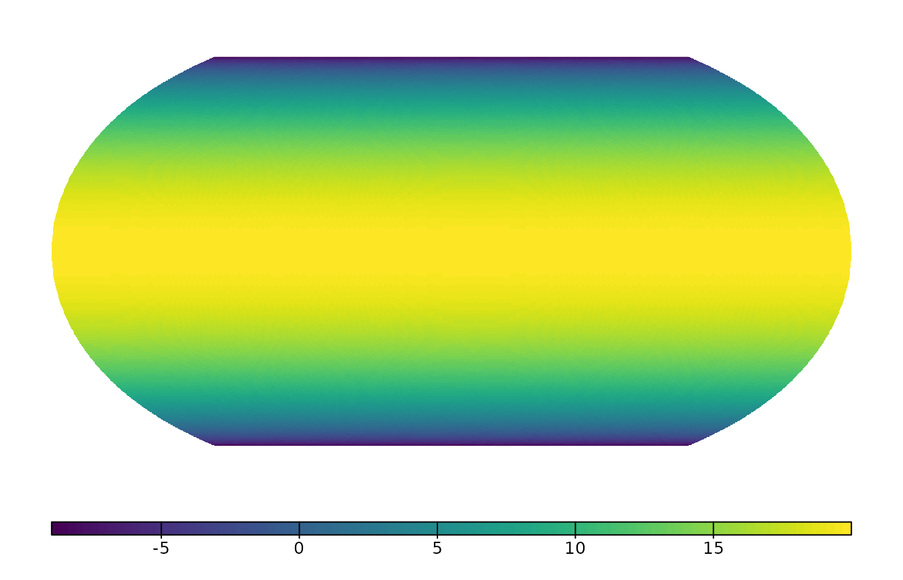

Drawing a hexagon for every cell becomes slow long before you run out of data: a million cells means a million polygons. globalhex avoids this by keeping data as cell IDs and building polygons only for the cells that end up on the screen.
Cell data
hex_data() pairs a vector of cells with one or more
columns of values. It is a tibble, and it contains no geometry:
storms <- dplyr::storms
cells <- point_to_cell(storms[c("long", "lat")], resolution = 6)
x <- hex_data(cells, wind = storms$wind, observations = 1L)
x
#> # A tibble: 20,778 × 3
#> cell wind observations
#> <gh_cell> <int> <int>
#> 1 02004556 25 1
#> 2 02004530 25 1
#> 3 02004134 25 1
#> 4 02000401 25 1
#> 5 02000004 25 1
#> 6 02000031 25 1
#> 7 02000335 25 1
#> 8 02003634 30 1
#> 9 02003265 35 1
#> 10 02034445 40 1
#> # ℹ 20,768 more rowsA cell can appear many times. Here each row is one storm observation, and several observations fall in the same cell.
Plotting
plot() draws a hex_data object. Use
value to choose a column (the first one is used by
default):
plot(x, value = "wind", resolution = 4)
Before drawing, values are summarized from the data’s resolution up to the display resolution. The summary depends on the column type:
| Column type | Default summary |
|---|---|
| numeric | mean |
| logical | majority |
| character or factor | most common value |
Counts and other totals should be added up instead, with
fun = sum:
plot(x, value = "observations", fun = sum, resolution = 4, border = NA)
Choosing the display resolution
If you leave out resolution, globalhex picks the finest
resolution whose visible cells fit on the current device at a few pixels
each. plot_resolution() reports what it would choose:
plot_resolution(x)
#> [1] 6You can steer the automatic choice instead of fixing it:
-
max_cellscaps the number of cells drawn. -
cell_pixelssets the smallest cell size, in screen pixels. -
lod = FALSEturns off automatic aggregation and draws the data at its own resolution.
plot(x, value = "wind", max_cells = 2000)
Zooming in
extent (or the familiar xlim and
ylim) limits the map to a longitude/latitude window. Cells
outside it are dropped before aggregation, so zooming in allows finer
detail. Use reset = FALSE to keep drawing on the same map
afterwards, here to add coastlines:
world <- sf::st_as_sf(maps::map("world", plot = FALSE, fill = TRUE))
plot(x, value = "observations", fun = sum, resolution = 5,
xlim = c(-98, -76), ylim = c(17, 32), reset = FALSE)
plot(sf::st_geometry(world), add = TRUE, border = "black", lwd = 0.6)
For a window that crosses the 180° meridian, give an
extent whose xmin is larger than its
xmax, such as c(170, -170, -10, 10).
Map projections
Set crs to any projection understood by
sf::st_crs(). Values are summarized first and only the
final cells are projected:
temperature <- terra::rast(nrows = 180, ncols = 360)
xy <- terra::xyFromCell(temperature, seq_len(terra::ncell(temperature)))
terra::values(temperature) <- 30 * cos(xy[, 2] * pi / 180) - 10
names(temperature) <- "temperature"
global <- raster_to_cell(temperature, resolution = 4, progress = FALSE)
global
#> # A tibble: 24,012 × 2
#> cell temperature
#> <gh_cell> <dbl>
#> 1 000000 5.78
#> 2 010000 5.78
#> 3 010003 5.21
#> 4 010036 4.65
#> 5 010032 4.08
#> 6 010345 3.50
#> 7 010341 2.90
#> 8 010304 2.30
#> 9 010300 1.69
#> 10 010303 1.09
#> # ℹ 24,002 more rows
plot(global, crs = "+proj=eqearth")
Large maps
Drawing thousands of separate polygons is slow on most graphics
devices and produces very large PDF or SVG files. When more than 20,000
cells would be drawn and terra is installed, plot()
therefore draws them as a single image instead. The render
argument controls this:
-
"auto"(default) chooses based onraster_threshold. -
"polygon"always draws separate polygons, which you need for cell borders. -
"raster"always draws an image.
Summarizing without plotting
cell_aggregate() performs the same summary as
plot() and returns the result, so you can analyze it or
plot it another way:
coarse <- cell_aggregate(x, resolution = 3, fun = sum, value = "observations")
coarse[order(-coarse$observations), ]
#> # A tibble: 353 × 2
#> cell observations
#> <gh_cell> <dbl>
#> 1 02000 262
#> 2 02534 258
#> 3 02526 221
#> 4 02521 218
#> 5 02522 207
#> 6 02006 206
#> 7 02034 205
#> 8 02423 203
#> 9 02004 202
#> 10 02063 202
#> # ℹ 343 more rowsTo use other plotting tools, such as ggplot2, convert the cells to
polygons with sf::st_as_sf(). Aggregate first so that you
only build the polygons you need:
polygons <- sf::st_as_sf(coarse$cell)
polygons$observations <- coarse$observations
library(ggplot2)
ggplot(polygons) +
geom_sf(aes(fill = observations), color = NA)sf::st_as_sf() prepares the polygons for flat
longitude/latitude maps. Cells that cross the 180° meridian are split
into two parts, one at each edge of the map, and cells containing a pole
are closed along the top or bottom edge. Areas from
sf::st_area() are unchanged. For a Pacific-centred map,
shift the longitudes to 0–360° with
sf::st_shift_longitude():
pacific <- sf::st_shift_longitude(polygons)Use sf::st_as_sf(cells, wrap = FALSE) to get the unsplit
spherical polygons, for example to project them to a polar map
yourself.